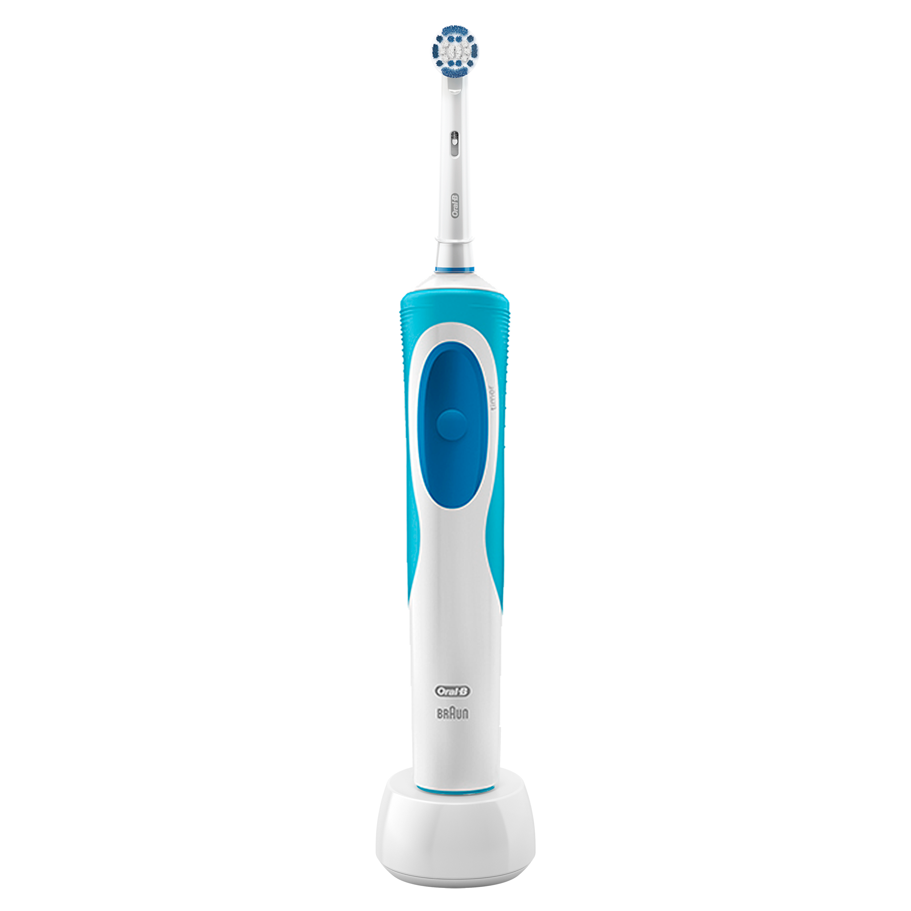
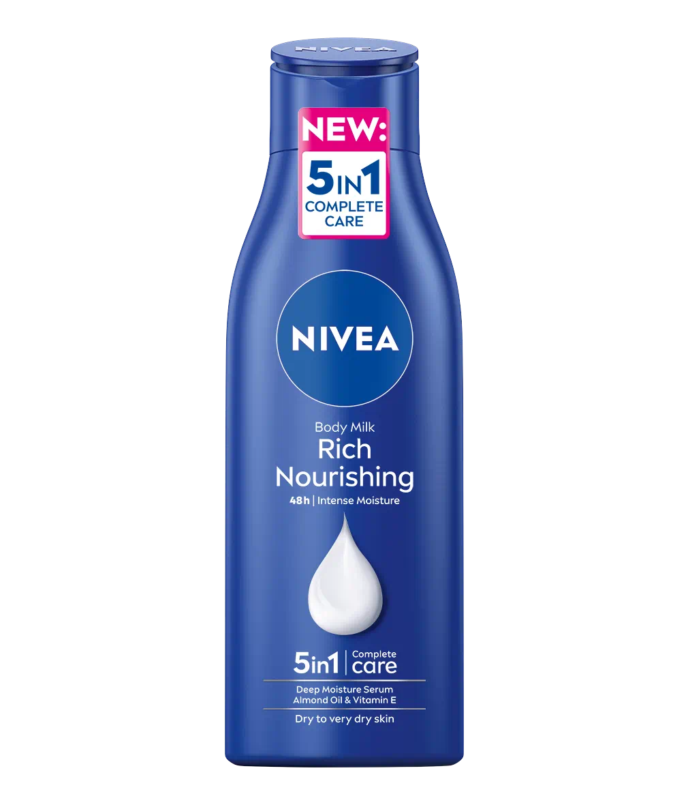

| Dove Shampoo |
340 ml |
Dove Shampoo is a nourishing hair care product designed to cleanse and moisturize the hair while keeping it soft and healthy. It is formulated with gentle ingredients that help repair damage, reduce dryness, and improve hair strength. Available in different variants, Dove Shampoo caters to various hair types, including dry, damaged, frizzy, and color-treated hair. |
Contains water, sodium laureth sulfate (cleansing agent), cocamidopropyl betaine (gentle foaming agent), glycerin (moisturizer), dimethicone (for smoothness), fragrance, citric acid, and nourishing oils. Some variants include ingredients like keratin, argan oil, or coconut milk for specific hair care benefits. |
|
| Dove Conditioner |
340 ml |
Dove Conditioner is a rich, nourishing hair care product designed to moisturize, detangle, and smooth hair while preventing dryness and damage. It helps restore softness and shine, making hair feel healthier and more manageable. Available in different variants, Dove Conditioner caters to various hair needs, such as hydration, repair, and frizz control. |
Contains water, cetearyl alcohol (moisturizer), dimethicone (for smoothness), behentrimonium chloride (conditioning agent), glycerin (hydration), fragrance, citric acid, and nourishing oils. Some variants include ingredients like keratin, argan oil, or coconut milk for added hair benefits. |
 |
| Safeguard Body Wash |
720 ml |
Safeguard Body Wash is a deep-cleansing and antibacterial body wash designed to remove germs while keeping the skin fresh and healthy. It provides long-lasting protection against bacteria and is formulated to maintain the skin’s natural moisture, preventing dryness. With a refreshing scent and rich lather, it leaves the skin feeling clean and invigorated after every wash. |
Contains water, sodium laureth sulfate (cleansing agent), cocamidopropyl betaine (foaming agent), glycerin (moisturizer), triclosan or benzalkonium chloride (antibacterial agents), fragrance, citric acid, and skin-conditioning ingredients. Some variants may include aloe vera, charcoal, or menthol for additional skin benefits. |
|
| Sensodyne Toothpaste |
150 grams |
Sensodyne Toothpaste is a specialized toothpaste designed to provide relief for sensitive teeth while offering long-lasting protection against pain triggers. It strengthens enamel, helps prevent cavities, and promotes overall oral health. With regular use, it forms a protective barrier over exposed dentin, reducing discomfort from hot, cold, sweet, or acidic foods and drinks. |
Contains potassium nitrate (for sensitivity relief), sodium fluoride (for cavity protection), hydrated silica (gentle cleaning agent), sorbitol (moisturizer), sodium lauryl sulfate (foaming agent), and flavoring agents. Some variants include stannous fluoride or extra whitening agents for additional benefits. |
|
| Cetaphil Facial Wash |
1 liter |
Cetaphil Facial Wash is a gentle yet effective cleanser designed to remove dirt, oil, and impurities while maintaining the skin’s natural moisture balance. It is dermatologically tested and suitable for all skin types, including sensitive skin, as it cleanses without causing irritation or dryness. The non-comedogenic and soap-free formula leaves the skin feeling fresh, smooth, and hydrated. |
Contains water, glycerin (moisturizer), cetyl alcohol and stearyl alcohol (emollients), sodium lauryl sulfate or cocamidopropyl betaine (gentle cleansing agents), panthenol (pro-vitamin B5 for hydration), niacinamide (for skin barrier support), and citric acid (pH balance). Some variants include aloe vera or vitamin E for added skin benefits. |
|
| Cetaphil Toner |
200 ml |
Cetaphil Toner is a gentle, alcohol-free toner designed to remove excess oil, dirt, and makeup while soothing and hydrating the skin. It helps maintain the skin’s natural pH balance, making it suitable for all skin types, including sensitive skin. With its mild and non-irritating formula, it refreshes the skin without stripping away moisture. |
Contains water, glycerin (moisturizer), niacinamide (for skin barrier support), panthenol (pro-vitamin B5 for hydration), aloe vera (soothing agent), allantoin (calming ingredient), and citric acid (for pH balance). Some variants may include witch hazel or chamomile extract for additional skin benefits. |
|
| Oral-B Toothbrush |
50 grams |
Oral-B Toothbrush is a high-quality toothbrush designed to effectively clean teeth and gums while being gentle on enamel. It features soft to medium bristles that remove plaque and food debris, promoting better oral hygiene. Available in both manual and electric options, Oral-B toothbrushes cater to different needs, including sensitive gums, deep cleaning, and whitening. |
Made with nylon bristles, ergonomic plastic handles, and rubber grips for comfortable use. Electric versions include rechargeable batteries, oscillating brush heads, and pressure sensors for enhanced cleaning efficiency. |
 |
| Nivea Lotion |
600 ml |
NIVEA Lotion is a moisturizing body lotion designed to nourish and hydrate the skin while providing long-lasting softness. It is enriched with skin-loving ingredients that help restore moisture, making it ideal for dry, normal, and sensitive skin types. With its lightweight, non-greasy formula, NIVEA Lotion absorbs quickly, leaving the skin feeling smooth and refreshed. |
Contains water, glycerin (moisturizer), mineral oil, shea butter or almond oil (nourishing agents), panthenol (pro-vitamin B5 for skin repair), dimethicone (for softness), and fragrance. Some variants include vitamin E, aloe vera, or Q10 for additional skin benefits. |
 |
| Dove Body Spray |
250 ml |
Dove Body Spray is a refreshing and long-lasting deodorant that provides 48-hour odor and sweat protection while being gentle on the skin. Infused with moisturizing cream, it helps prevent underarm irritation and dryness, leaving skin soft and smooth. With a light and fresh fragrance, it keeps you feeling clean and confident throughout the day. |
Contains butane, isobutane, propane (propellants), aluminum chlorohydrate (antiperspirant), cyclopentasiloxane (skin conditioner), parfum (fragrance), and Dove’s signature ¼ moisturizing cream. Some variants include cucumber extract, shea butter, or pomegranate scent for added freshness and care. |
 |
| Hand Sanitizer |
500 ml |
Hand Sanitizer is a quick and effective solution for killing germs and bacteria on the hands without the need for water. It is formulated with alcohol to disinfect while often including moisturizers to prevent dryness. Ideal for on-the-go hygiene, hand sanitizers come in gel, liquid, or spray forms for convenience. |
Contains ethyl alcohol or isopropyl alcohol (60% to 80% for germ-killing effectiveness), water, glycerin (moisturizer), carbomer (thickening agent in gels), and fragrance. Some variants include aloe vera, vitamin E, or essential oils for added skin care benefits. |
|